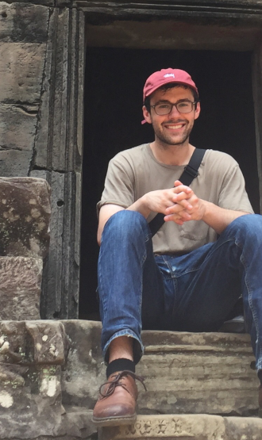

Alexander Hankin

I am a 4th year Electrical Engineering Ph.D. student at Tufts University advised by Prof. Mark Hempstead.
My research interests vary, but most of my work has been on building architecture-level modeling and simulation tools in the areas of emerging non-volatile memories and thermal hotspots.
I have completed research internships at Google and Intel.
Email | CV
Publications
L. Pentecost*, A. Hankin*, M. Donato, M. Hempstead, G. Y. Wei, and D. Brooks (*joint first authors), "NVMExplorer: A Framework for Cross-Stack Comparisonsof Embedded Non-Volatile Memory Solutions," under review at MICRO 2021.
A. Hankin, D. Werner, J. Sebot, K. Vaidyanathan, M. Amiraski, and M. Hempstead, "HotGauge: A Methodology for Characterizing Hotspots in Next Generation Processors," under review at MICRO 2021.
A. Hankin and M. Hempstead, "Proposal for a Timing Model of Ion Trap Quantum Architectures," to appear in I too can Quantum! (I2Q) at ISCA 2021.
A. Hankin, M. Amiraski, K. Sangaiah, and M. Hempstead, "Toward Faster and More Efficient Training on CPUs Using STT-RAM-based Last Level Cache," 12th Annual Non-Volatile Memories Workshop (NVMW), San Diego, CA, USA, 2021.
pdf
Poster
A. Hankin, T. Shapira, K. Sangaiah, M. Lui and M. Hempstead, "Evaluation of Non-Volatile Memory Based Last Level Cache Given Modern Use Case Behavior," 2019 IEEE International Symposium on Workload Characterization (IISWC), Orlando, FL, USA, 2019, pp. 143-154, doi: 10.1109/IISWC47752.2019.9042051.
pdf
slides
NVM models